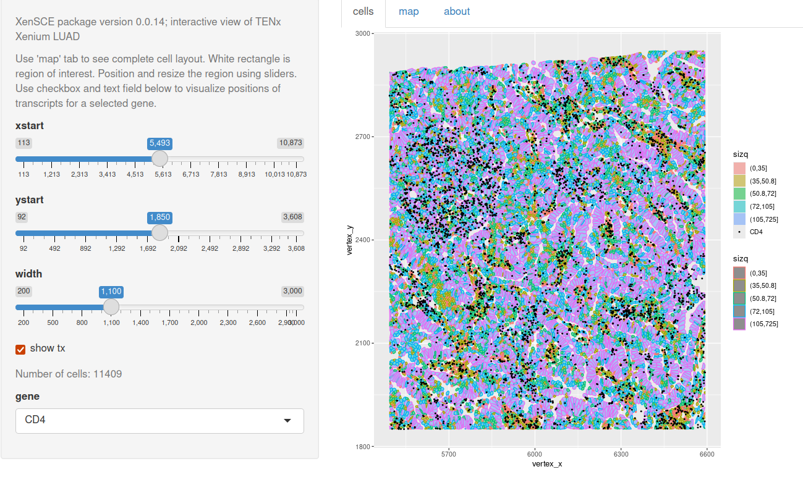

This package experimentally explores an S4 class and methods for 10x Xenium demonstration data in Open Storage Network.
Installation
BiocManager::install("vjcitn/xenLite")Basics
The package
defines a class
XenSPEPthat extends SpatialExperiment, accommodating geometry information for cells, nuclei, and transcripts in parquet files that as of 0.0.17 are ingested byarrow::read_parquet(..., as_data_frame=FALSE). RAM consumption can be significant.includes functions to retrieve example data from NSF Open Storage Network buckets
A pkgdown site is available.
Interaction
A shiny app is available. Some screenshots of earlier versions follow.
The rectangle shows a region of interest, selectable using sliders:

The details can include positions of transcripts for selected genes:

CD4-expressing cells seem complementary to those expressing EPCAM.

An example is available at shinyapps.io.